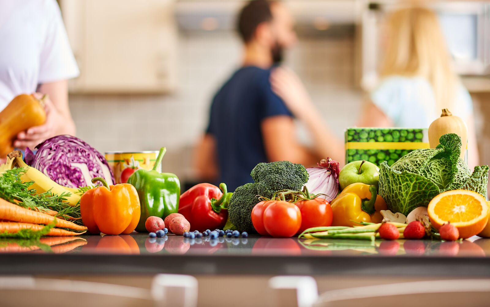

Healthy eating habits
Sign-up
Recipes
Tips
Home

Quantity of proteins and others in milk
Diary Products
Food
Measure
Grams
Calories
Protien
Carb.
Fat
Cow's milk
1 qt.
976
660
32
48
40
Buttermilk
1 qt.
984
360
36
52
10
Powdered milk
1 cup
103
515
27
39
30
Goat's milk
1 cup
244
165
8
11
20
Malted milk
2 cups
234
765
231
12
20